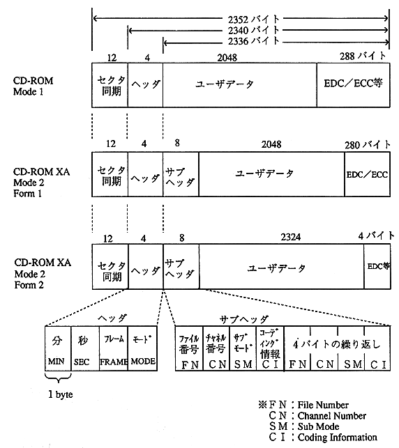

2.4 Sector structure
* GAME-CD uses three types of sectors: Mode1, Mode2 Form1, and Mode2 Form2.

Figure 2.5 CD-ROM and CD-ROM XA sector format
 | Mode2 format without form specification cannot be used. |

| | Mode2 format without form specification cannot be used. |